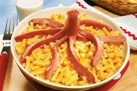

Annie's Mac 'N Cheese and "Squid" Brats

Food for feeding nostalgia!
Close your eyes, take some deep breaths and think of your childhood. What do you see? Is it hot dogs chopped in the shape of a squid served with your bowl of mac 'n cheese? You're damn right it is. Lucky for you this delicious mac 'n cheese meal is no longer a thing of the past, we've taken the time to create the perfect Annie's Mac 'N Cheese recipe to be served with your squid shaped bratwurst (because you're a big kid now).
This recipe is easy and all of the ingredients should be in your house if you're somebody with a moderate amount of common sense. If you're struggling to keep up with modern society and don't have what you need, these ingredients can be aquired at just about any grocery store!
Ingredients
- A box of Annie's Mac 'N Cheese (farm animal shaped if possible)
- Milk
- Butter
- 1 Bratwurst
Instructions
- Place a pot of water to boil on the stove set to high heat. Set another burner to medium-high heat for a non-stick skillet.
- Cut your bratwurst vertically until it's split roughly 3/4 the way to one end. Make another cut intersecting the first cut. Make similar cuts as desired.
- Place a small slice of butter into the skillet and add the bratwurst. Remember to flip it after 3-4 minutes to get an even cook.
- Add the pasta to the water once it is boiling.
- Once the brat is a good and grilled (you can see if it's cooked thoroughly by examining the tentacles), remove it from the heat.
- Once the pasta has softened, drain the water and add 1/4 cup of milk, the cheese mix, and a 2 tablespoons of butter.
- Mix the pasta until the cheese has reached a desireable consistency. Add the squid.
- Enjoy!
Return to Home